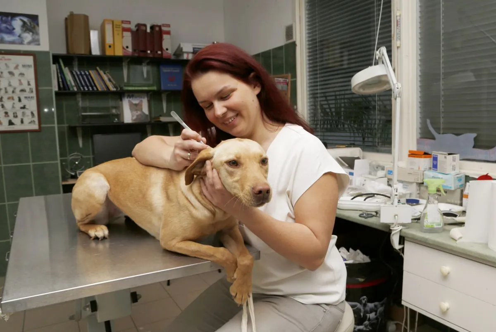
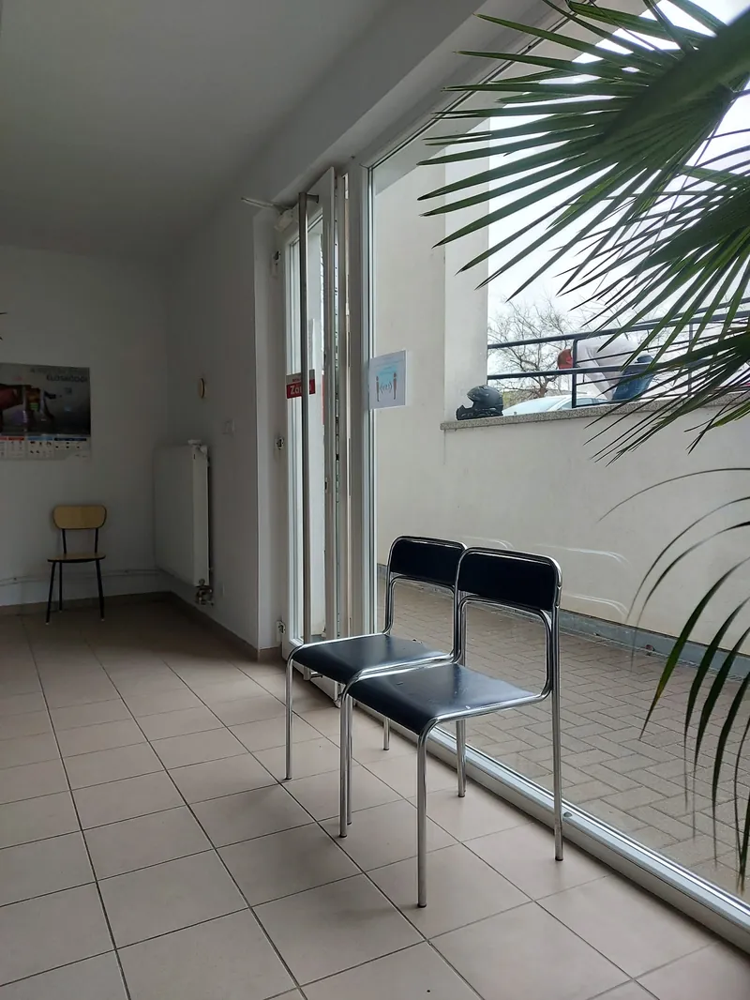
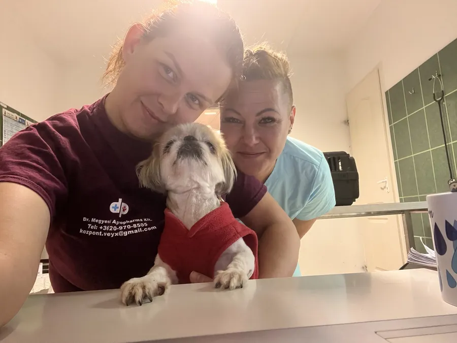
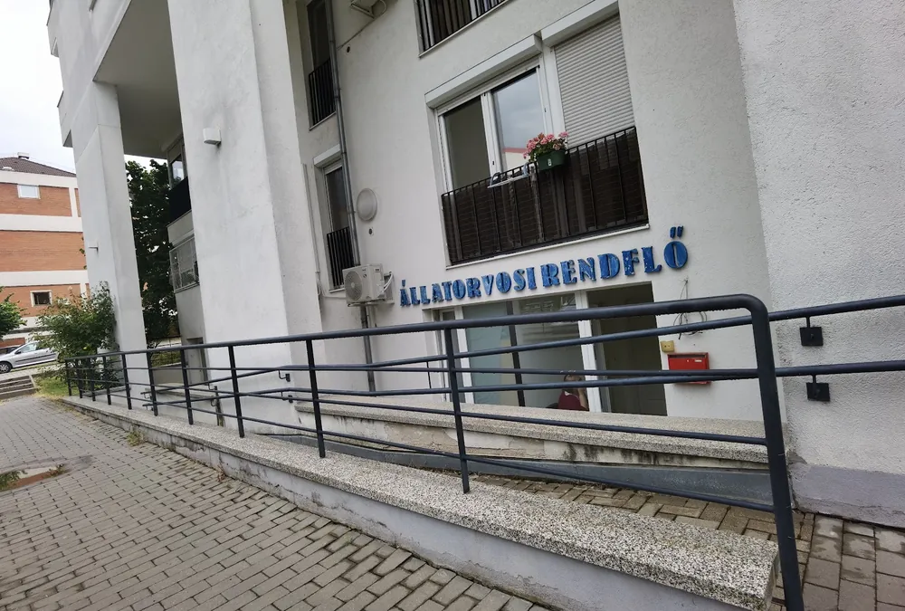
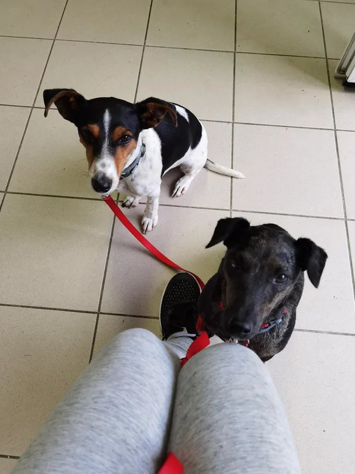

Védőoltások
Vakcinázási program kölyökkutyáknak, kiscicáknak és nyulaknak, ismétlő oltások felnőtt állatoknak. Az oltás előtt mindig megvizsgáljuk a kedvencedet.
Veszettség elleni oltás: 10 500 FtRendelés: hétfőtől péntekig, előzetes bejelentkezéssel
Kisállatrendelő a Fellbach utcai üzletsoron: oltás, belgyógyászat, sebészet, fogászat és szemészet. Nálunk az is fontos, hogy kedvenced a lehető legkevésbé féljen.

„…az is fontos, hogy az állat a lehető legkevésbé féljen.”
Egy gazdi a Google-véleményébenSok kutya és cica már a váróban szorong. Ezért lassan, nyugodtan dolgozunk, és mindent elmagyarázunk a gazdinak is.
„A Doktornő rendkívül kedves és nyugodt volt végig, a cicával is nagyon profin bánt.”
Ismerkedő délutánokat is szervezünk, hogy a rendelő ne csak az oltást jelentse, hanem jó élményt is.

Ingyenes parkolás a rendelő előtt, és pár lépés a Kertvárosi buszpályaudvar.
Állatorvosi alapellátás kutyáknak, macskáknak és nyulaknak, kölyökkortól idős korig.
Vakcinázási program kölyökkutyáknak, kiscicáknak és nyulaknak, ismétlő oltások felnőtt állatoknak. Az oltás előtt mindig megvizsgáljuk a kedvencedet.
Veszettség elleni oltás: 10 500 FtAlapos fizikális vizsgálat, vérvétel, vizelet- és bőrkaparék-vizsgálat. A mikroszkópos vizsgálatot helyben, megvárható módon végezzük.
Első vizsgálat: 12 500 FtIvartalanítás, sebellátás és -varrás, daganatok eltávolítása, szövetminta. Műtétre előzetes bejelentkezéssel.
Kandúr ivartalanítása: 16 500 FtUltrahangos fogkő-eltávolítás és foghúzás bódításban. A fogak állapotától függően egyedi árajánlatot adunk.
38 000 Ft-tólSzemvizsgálat, mintavétel és kezelés, ha könnyezik, vörös vagy hunyorog a kedvenced szeme.
Első vizsgálat: 12 500 FtVálaszd ki, kivel és miért jönnél, és megmutatjuk a 2026-os árlistánk tételeit. Az árak bruttó forintárak.
Kivel jössz?
Miért jönnél?
Az árak 2026. január 1-jétől érvényesek, forintban értendők és tartalmazzák az ÁFÁ-t. ÁFÁ-s számla igényét kérjük, előre jelezd. Az árváltoztatás jogát fenntartjuk.



A MoMoVet kertvárosi kisállatrendelő a Fellbach utcai üzletsoron. A vizsgálatnál nem sietünk: megvárjuk, amíg a kedvenced megnyugszik, és a gazdinak is elmondjuk, mit miért csinálunk.
Ha bajba jutott állattal találkozunk, akkor is segítünk: egyik kolléganőnk egy kóbor cicát karolt fel az utcán, akit ivartalanítás után örökbe adtunk.
163 vélemény a Google-on
„Végre az ország ezen részében is van olyan rendelő, ahol az is fontos, hogy az állat a lehető legkevésbé féljen, és pozitív élmény legyen számára a látogatás.”
„Rugalmas, minőségi munkát végeznek a rendelőben dolgozók… Külön szuper, hogy a rendelő mellett rögtön állatpatika is rendelkezésre áll, parkolni is ingyenesen lehet.”
„A Doktornő rendkívül kedves és nyugodt volt végig, a cicával is nagyon profin bánt. Csakis pozitív érzésekkel távoztam.”
Csak előzetes bejelentkezéssel fogadunk. Időpontot rendelési időben kérhetsz a 06 30 484 0023-as számon.
Hétfőtől péntekig 9–17, szombaton 9–12 óráig. Vények, gyógytápok, bolha- és kullancsszerek, féreghajtók, ízületvédők. 1997 óta működő családi vállalkozás.
A pécsi állatorvosi ügyelet hétvégén és ünnepnapokon reggel 7-től este 9-ig hívható. Indulás előtt telefonálj: a hívás mindig az épp ügyeletes állatorvoshoz fut be. Az ügyeleti ellátás legalább 10 000 Ft felárral jár.
Ügyelet: 30/970-5419Éjjel-nappali ellátást a legközelebb a Dunaföldvári Állatkórház nyújt.
Ha nem találsz választ, hívj minket, vagy írj a momovetpecs@gmail.com címre.
Igen, a rendelőben előzetes bejelentkezés szükséges, műtétre is. Időpontot a 06 30 484 0023-as számon kérhetsz rendelési időben.
Az első vizsgálat 12 500 Ft (15–20 perc fizikális vizsgálat). Konzultációval, például allergia, bőrprobléma vagy epilepszia esetén 20 000 Ft (30–40 perc). A vizsgálati díj nem tartalmazza a beadott gyógyszerek és a laborvizsgálatok árát.
Hétvégén és ünnepnapokon a pécsi állatorvosi ügyelet reggel 7-től este 9-ig érhető el a 30/970-5419-es számon (baranyaugyelet.hu). Indulás előtt érdemes telefonon egyeztetni. Az ügyeleti ellátás legalább 10 000 Ft felárral jár. A legközelebbi éjjel-nappali ellátást a Dunaföldvári Állatkórház nyújtja.
Érvényes EU-állatútlevél, mikrochip és érvényes veszettség elleni oltás. Néhány országban ezen felül más szabályok is vannak, ezért utazás előtt érdemes tájékozódni a Nébih oldalán. A rendelőben a chip beültetése 13 500 Ft, az útlevél kiállítása 16 000 Ft.
A rendelő előtt ingyenes parkolás van. Busszal a Kertvárosi buszpályaudvarig érdemes jönni (1, 7, 7Y, 22, 23, 24, 55, 60, 60A, 60Y, 73, 73Y, 107E, 109E, 142).
Igen, közvetlenül a rendelő mellett az Animedic állatgyógyszertár működik, hétfőtől péntekig 9–17, szombaton 9–12 óráig. Itt az állatorvosi vényeket is beválthatod.
Igen, de kérjük, előre jelezd. Az árak forintban értendők és tartalmazzák az ÁFÁ-t.